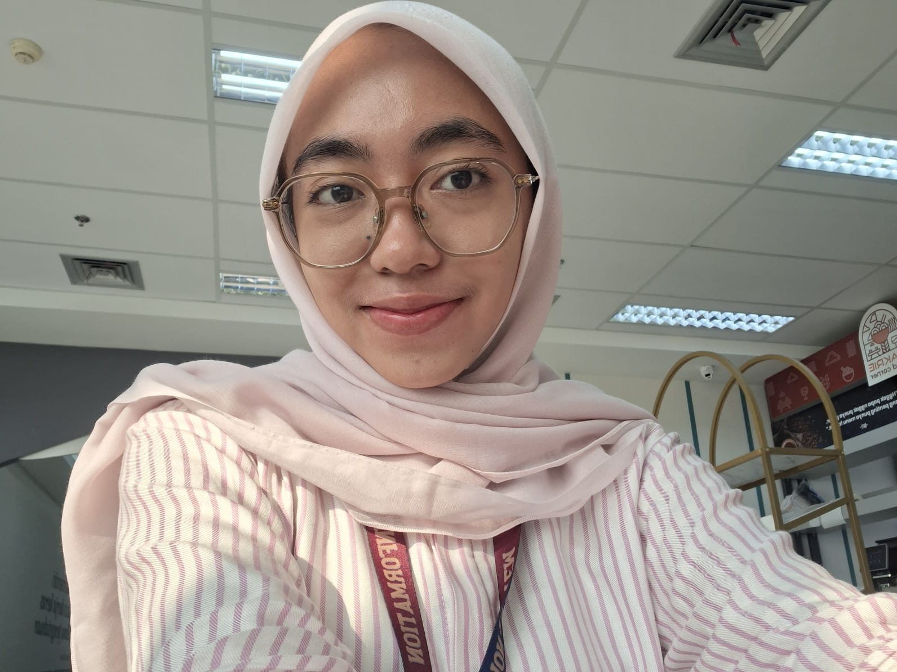

Mahasiswa aktif Program Studi Sistem Informasi Universitas Bakrie dengan minat pada UI/UX Design, Database Management, Business Process Analysis, Data Visualization, dan System Development. Aktif dalam organisasi kampus serta memiliki pengalaman dalam administrasi, marketing support, dan pengelolaan keuangan organisasi.
Contact Me
Universitas Bakrie
Sistem Informasi
GPA 3.51 / 4.00
Business Intelligence Analyst (BNSP)
West Bekasi, Indonesia
Semester 6
UI/UX Design
Database Design
System Analysis
Data Visualization
UML Design
Figma
Bizagi
Draw.io
XAMPP
VS Code
Tableau
Problem Solving
Communication
Teamwork
Time Management
Administrative support, content creation, scheduling, social media management, and marketing support.
Managed budgeting, financial planning, accountability reports, and coordinated financial needs across divisions.
Staff Komisi II (Treasury), responsible for proposal review, budget verification, LPJ evaluation, and financial accountability monitoring.
Business process analysis and BPMN redesign using Bizagi.
Home Service Management Platform with booking and tracking features.
Smart Burger Ordering System prototype designed using Figma and UML.
📧 chalimaats@gmail.com
📱 +62 87882163337
📍 West Bekasi, Indonesia
LinkedIn • GitHub • Instagram